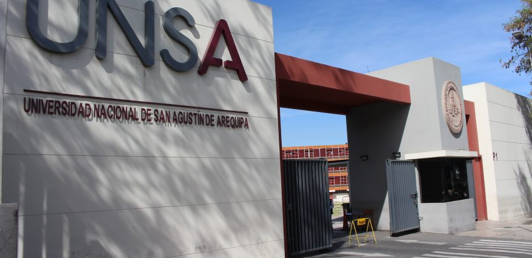
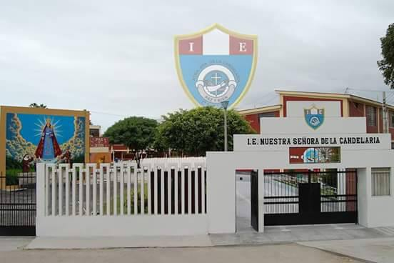

Sobre mí
Hola, mi nombre es Diana Ramos Rodrigo, tengo 19 años. Soy estudiante del curso de Ingeniería de Sistemas
y me apasiona el mundo de la tecnología y el diseño digital. Me gusta explorar nuevas herramientas,
aprender constantemente y aplicar mis conocimientos en proyectos prácticos que puedan generar un impacto
positivo.

Ciudad Natal
Nací en Camaná, Arequipa, Perú, un lugar que siempre me ha inspirado por su historia, su cultura y sus
tradiciones. Crecer allí me permitió disfrutar de sus paisajes y de un ambiente familiar muy cercano,
donde empecé a descubrir mi interés por aprender y por la tecnología.
Estudié toda mi educación secundaria en el Colegio Nuestra Señora de la Candelaria, un colegio de gestión
privada reconocido por su enfoque académico sólido y actividades extracurriculares que fomentaban el
desarrollo integral de los estudiantes. Durante esos años, adquirí valores importantes como la
disciplina, la perseverancia y el trabajo en equipo, que hoy aplico en mis estudios universitarios y
proyectos personales.

Colegio Nuestra Señora de la Candelaria